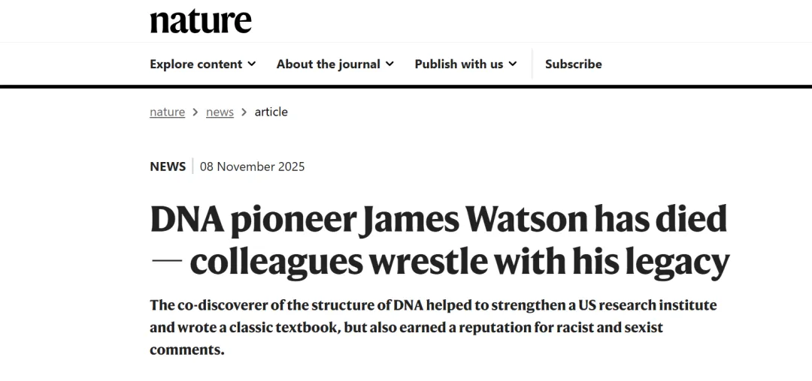
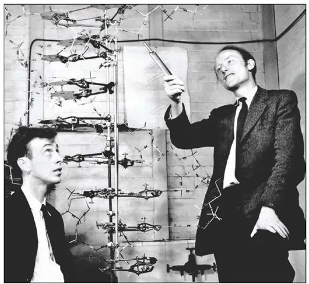
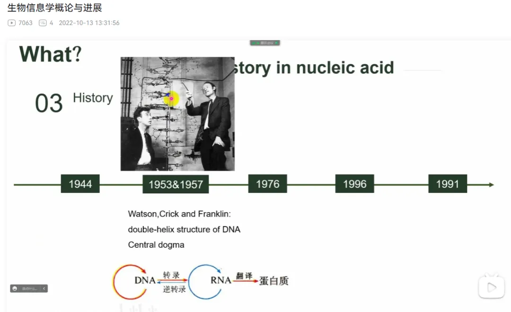

没有双螺旋，就没有生物信息
原文：https://mp.weixin.qq.com/s?__biz=MzAwMzIzOTk5OQ==&mid=2247532052&idx=1&sn=0d398e7a762689fdb6b5adc83a061856&chksm=9b3c0744ac4b8e52894028f0a745545aa9a5f199a22bb4d4e2ff1ef25bbf17ee28e4793654f7#rd 合集：漫谈胡侃
一、讣告

包括《Nature》在内的多家权威媒体已报道，与弗朗西斯·克里克共同提出DNA双螺旋结构(1953年)并获得诺奖(1962年)的詹姆斯·沃森与世长辞[1]。相信下面这张照片大家都不陌生(图1)，各类教科书中常常出现。我们B站的教案(图2)中也曾引用这张照片[2]。DNA双螺旋结构的阐明与相对论、量子力学并列为20世纪三大科学发现[3]，称作现代生物学之父也不为过。
图1
图2二、没有双螺旋，就没有生物信息
作为冷泉港实验室的负责人，沃森参与并领导了人类基因组计划，这极大地推动了基因组学时代的到来，而这正是生物信息学有今日发展趋势的缘由。也正是其对DNA结构的解析，才给了弗雷德里克·桑格发明桑格测序并两获诺奖。站在这些巨人的肩膀上，才有如今二代测序、三代测序这样的高通量测序，从而衍生出如今的Seq组学。换言之，如今的scRNA-seq、空间多组学，甭管多高端，都离不开沃森的发现；那就更不论生物信息了。可以说：没有双螺旋，就没有生物信息。
三、遗忘才是真正的死亡
出乎意料的是，沃森的去世并没有前段时间杨老那般的热度。可能是其晚年发表黑人基因&智力之间的关联性导致的。这也导致其被剥夺了很多学术头衔。
最后，通过沃森生平再了解一下他吧，遗忘才是真正的死亡：
詹姆斯·杜威·沃森（James Dewey Watson）
1928年4月6日出生于美国伊利诺伊州芝加哥，世界著名生物学家、遗传学家。美国科学院院士，诺贝尔奖、科普利奖章获得者，科学界权威人物，被誉为“DNA之父”。
1928年4月6日出生于美国伊利诺伊州芝加哥。
1947年毕业于芝加哥大学，获学士学位，后进印第安纳大学研究生院深造。
1950年获博士学位后去丹麦哥本哈根大学从事噬菌体的研究。
1951-1953年在英国剑桥大学卡文迪什实验室进修。
1953年回国，1953-1955年在加州理工大学工作。
1955年去哈佛大学执教，先后任助教和副教授。
1961年升为教授，在哈佛期间，主要从事蛋白质生物合成的研究。
1968年起任纽约长岛冷泉港实验室主任，主要从事肿瘤方面的研究。
2025年11月6日，詹姆斯·杜威·沃森在纽约长岛的一家临终关怀医院去世，享年97岁。
参考：[1]https://www.nature.com/articles/d41586-025-03380-2[2]https://www.bilibili.com/video/BV1he4y1E7Ei/[3]https://baike.baidu.com/item/%E8%A9%B9%E5%A7%86%E6%96%AF%C2%B7%E6%9D%9C%E5%A8%81%C2%B7%E6%B2%83%E6%A3%AE/6707445
如何联系我们

 留一个领取资料、开箱即用的单细胞分析镜像的微信号[Biomamba_zhushou]，方便各位随时交流。同时我们也构建了交流群矩阵，欢迎大家入群讨论。
大家可以阅读完这几篇之后添加给生信入门初学者的小贴士
没有检索，就没有发言权
留一个领取资料、开箱即用的单细胞分析镜像的微信号[Biomamba_zhushou]，方便各位随时交流。同时我们也构建了交流群矩阵，欢迎大家入群讨论。
大家可以阅读完这几篇之后添加给生信入门初学者的小贴士
没有检索，就没有发言权
已有生信基地联系方式的同学无需重复添加

 您点的每个赞和在看，我都认真当成了喜欢
您点的每个赞和在看，我都认真当成了喜欢